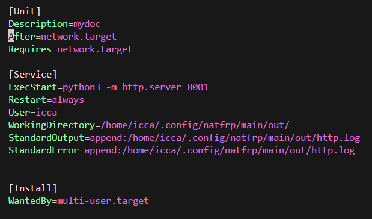

linux service建立
创建service文件

首先在/etc/systemd/system/目录下创建一个example.service文件，文件中填入上面的内容。
需要更改的部分：
如果是不依赖网络的服务，那么可以将Requires那一行去掉
ExecStart改为你需要执行的命令
User代表你以什么用户运行该进程，如果需要高权限，可以改为root
WorkingDirectory代表你的运行该程序时将会进入哪个目录。
StandardOutput代表进程的标准输出重定向到哪个文件
StandardError代表标准错误输出重定向到哪个文件
启动service
重新加载所有的service，也包括我们新加入的service文件。
sudo systemctl daemon-reload
启动服务
sudo systemctl start example.service
查看服务状态
sudo systemctl status example.service
如果出现activating，那么启动成功，此时该进程将被加入守护进程与开机自启。
关闭服务
sudo systemctl stop example.service
删除服务
sudo rm /etc/systemd/system/example.service
sudo systemctl stop example.service